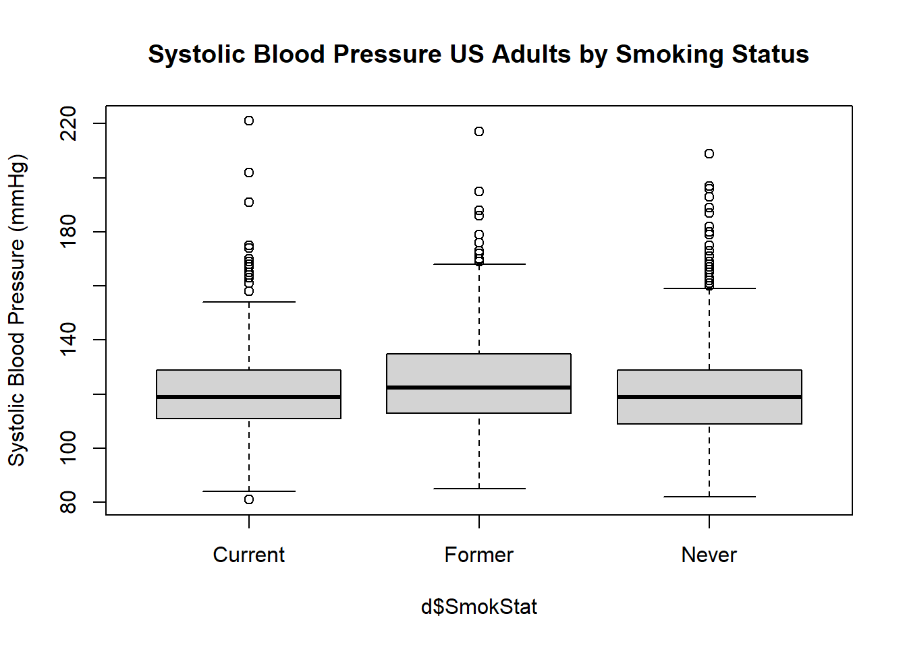

In this computer lab, you will learn how to describe a sample using
simple plots and descriptive statistics. We concentrate here on
continuous (or “numeric”) outcome variables, looking at one group, two
or more groups, and the relationship between a continuous outcome
variable and a continuous explanatory variable (determinant).
In a later COO you will learn how to describe a categorical variable,
and associations between two categorical variables.
You are asked to answer a number of questions (in bold and numbered throughout).
Before starting, please download the file BMISBP.csv from Blackboard and save it locally.
We will start the R session by installing (if necessary) and loading
the packages we need for the exercises below. We will be using datasets
and/or functions from the NHANES package and the
psych package. If you are using these packages for
the first time, you will first need to install them. Do this
either via the RStudio menu (Tools-Install Packages), or
with these commands:
install.packages("NHANES") # put the package name between quotation marks
install.packages("psych")
install.packages("car")You only need to install a package once. At the beginning of every R/Rstudio session, you need to load the packages you will be using:
library(NHANES)
library(psych)
library(car)For the following exercises, we will use two datasets:
NHANES packageWe will start by looking at systolic blood pressure of adults in the NHANES sample. This dataset is a subset of the National Health and Nutrition Examination Survey (NHANES). First we load the data frame and get some information about it:
data(NHANES)
?NHANESQuestion 1. What type of study design is this?
We’ll use the function dim() (dimensions) to see how
many people are in the dataset provided (number of rows), and how many
variables (number of columns).
dim(NHANES)## [1] 10000 76The dataset contains 76 columns, or variables, from 10000 participants, in the rows.
It can also be useful to look at the names of the variables (columns) in your data frame:
colnames(NHANES)## [1] "ID" "SurveyYr" "Gender"
## [4] "Age" "AgeDecade" "AgeMonths"
## [7] "Race1" "Race3" "Education"
## [10] "MaritalStatus" "HHIncome" "HHIncomeMid"
## [13] "Poverty" "HomeRooms" "HomeOwn"
## [16] "Work" "Weight" "Length"
## [19] "HeadCirc" "Height" "BMI"
## [22] "BMICatUnder20yrs" "BMI_WHO" "Pulse"
## [25] "BPSysAve" "BPDiaAve" "BPSys1"
## [28] "BPDia1" "BPSys2" "BPDia2"
## [31] "BPSys3" "BPDia3" "Testosterone"
## [34] "DirectChol" "TotChol" "UrineVol1"
## [37] "UrineFlow1" "UrineVol2" "UrineFlow2"
## [40] "Diabetes" "DiabetesAge" "HealthGen"
## [43] "DaysPhysHlthBad" "DaysMentHlthBad" "LittleInterest"
## [46] "Depressed" "nPregnancies" "nBabies"
## [49] "Age1stBaby" "SleepHrsNight" "SleepTrouble"
## [52] "PhysActive" "PhysActiveDays" "TVHrsDay"
## [55] "CompHrsDay" "TVHrsDayChild" "CompHrsDayChild"
## [58] "Alcohol12PlusYr" "AlcoholDay" "AlcoholYear"
## [61] "SmokeNow" "Smoke100" "Smoke100n"
## [64] "SmokeAge" "Marijuana" "AgeFirstMarij"
## [67] "RegularMarij" "AgeRegMarij" "HardDrugs"
## [70] "SexEver" "SexAge" "SexNumPartnLife"
## [73] "SexNumPartYear" "SameSex" "SexOrientation"
## [76] "PregnantNow"To keep things simple for the following exercises, we will
concentrate on only the second survey (2011-2012), and use only the
adults in the sample. Make a new dataframe d,
containing this selection, and check how many participants are
left:
d <- data.frame(NHANES[NHANES$SurveyYr == "2011_12" & NHANES$Age >= 18,])
dim(d)## [1] 3707 76So we continue with the 3707 adult participants. Note that we still have 76 variables.
In COO2 you learned the function View() to examine an
entire data frame. With such a large data frame, it can be useful to
just look at the first few lines of data frame with which you are
working, to get a sense of the structure. You can do this with the
head() function. Use:
head(d)## ID SurveyYr Gender Age AgeDecade AgeMonths Race1 Race3 Education
## 1 62172 2011_12 female 43 40-49 NA Black Black High School
## 2 62174 2011_12 male 80 <NA> NA White White College Grad
## 3 62174 2011_12 male 80 <NA> NA White White College Grad
## 4 62176 2011_12 female 34 30-39 NA White White College Grad
## 5 62178 2011_12 male 80 <NA> NA White White High School
## 6 62180 2011_12 male 35 30-39 NA White White College Grad
## MaritalStatus HHIncome HHIncomeMid Poverty HomeRooms HomeOwn
## 1 NeverMarried 20000-24999 22500 2.02 4 Rent
## 2 Married 65000-74999 70000 4.30 7 Own
## 3 Married 65000-74999 70000 4.30 7 Own
## 4 Married more 99999 100000 5.00 8 Own
## 5 Widowed 0-4999 2500 0.05 6 Own
## 6 Married 20000-24999 22500 0.87 6 Own
## Work Weight Length HeadCirc Height BMI BMICatUnder20yrs
## 1 NotWorking 98.6 NA NA 172.0 33.3 <NA>
## 2 NotWorking 95.8 NA NA 168.1 33.9 <NA>
## 3 NotWorking 95.8 NA NA 168.1 33.9 <NA>
## 4 NotWorking 68.7 NA NA 171.6 23.3 <NA>
## 5 NotWorking 85.9 NA NA 173.5 28.5 <NA>
## 6 Working 89.0 NA NA 178.7 27.9 <NA>
## BMI_WHO Pulse BPSysAve BPDiaAve BPSys1 BPDia1 BPSys2 BPDia2
## 1 30.0_plus 80 103 72 100 70 102 68
## 2 30.0_plus 56 97 39 NA NA 96 38
## 3 30.0_plus 56 97 39 NA NA 96 38
## 4 18.5_to_24.9 92 107 69 NA NA 114 70
## 5 25.0_to_29.9 68 121 72 124 72 124 76
## 6 25.0_to_29.9 66 107 66 108 62 108 66
## BPSys3 BPDia3 Testosterone DirectChol TotChol UrineVol1 UrineFlow1
## 1 104 76 47.53 1.89 4.37 107 0.645
## 2 98 40 642.82 1.40 5.25 94 1.160
## 3 98 40 642.82 1.40 5.25 94 1.160
## 4 100 68 21.11 1.42 4.42 341 1.258
## 5 118 68 562.78 1.22 5.20 16 0.113
## 6 106 66 401.78 0.85 3.70 350 2.593
## UrineVol2 UrineFlow2 Diabetes DiabetesAge HealthGen DaysPhysHlthBad
## 1 NA NA No NA Good 2
## 2 NA NA No NA Fair 30
## 3 NA NA No NA Fair 30
## 4 NA NA No NA Vgood 2
## 5 29 0.259 No NA Fair 2
## 6 NA NA No NA Good 0
## DaysMentHlthBad LittleInterest Depressed nPregnancies nBabies
## 1 10 Several Most 3 2
## 2 2 None None NA NA
## 3 2 None None NA NA
## 4 0 None None 5 2
## 5 10 None Several NA NA
## 6 8 Several Several NA NA
## Age1stBaby SleepHrsNight SleepTrouble PhysActive PhysActiveDays
## 1 20 8 No No 2
## 2 NA 9 No No 7
## 3 NA 9 No No 5
## 4 29 7 No Yes 5
## 5 NA 6 Yes No NA
## 6 NA 7 Yes No NA
## TVHrsDay CompHrsDay TVHrsDayChild CompHrsDayChild Alcohol12PlusYr
## 1 More_4_hr More_4_hr NA NA Yes
## 2 4_hr 0_hrs NA NA Yes
## 3 4_hr 0_hrs NA NA Yes
## 4 2_hr 0_to_1_hr NA NA Yes
## 5 More_4_hr 0_hrs NA NA No
## 6 2_hr 1_hr NA NA Yes
## AlcoholDay AlcoholYear SmokeNow Smoke100 Smoke100n SmokeAge Marijuana
## 1 3 104 Yes Yes Smoker 28 Yes
## 2 NA 0 <NA> No Non-Smoker NA <NA>
## 3 NA 0 <NA> No Non-Smoker NA <NA>
## 4 2 104 <NA> No Non-Smoker NA Yes
## 5 NA NA <NA> No Non-Smoker NA <NA>
## 6 1 2 <NA> No Non-Smoker NA No
## AgeFirstMarij RegularMarij AgeRegMarij HardDrugs SexEver SexAge
## 1 21 No NA No Yes 17
## 2 NA <NA> NA <NA> <NA> NA
## 3 NA <NA> NA <NA> <NA> NA
## 4 18 No NA No Yes 16
## 5 NA <NA> NA <NA> <NA> NA
## 6 NA No NA No Yes 17
## SexNumPartnLife SexNumPartYear SameSex SexOrientation PregnantNow
## 1 4 2 No Heterosexual No
## 2 NA NA <NA> <NA> <NA>
## 3 NA NA <NA> <NA> <NA>
## 4 15 1 No Heterosexual No
## 5 NA NA <NA> <NA> <NA>
## 6 4 1 No Heterosexual <NA>By default, head() displays the first 6 rows of data;
you can change the number of rows displayed using the option
n=. Try:
head(d, n = 10)Make a histogram and boxplot of systolic blood pressure (SBP):
hist(d$BPSysAve, main = "Systolic Blood Pressure US Adults",
xlab = "Systolic Blood Pressure (mmHg)")boxplot(d$BPSysAve, main = "Systolic Blood Pressure US Adults",
ylab = "Systolic Blood Pressure (mmHg)")Question 2. Describe the shape of the distribution of SBP. Which descriptive statistics would you prefer for the location and variation (spread)?
Before continuing, see if you can read off the median SBP in the sample. What are the first and third quartiles, and what is the interquartile range? Can you guess (approximately) what the mean will be? And the standard deviation?
Question 2a. Write down your estimates for the sample quartiles, IQR, mean and SD.
Now we’ll check these estimates. You’ve seen several of the functions
(mean, median, sd) earlier. IQR() is the interquartile
range.
median(d$BPSysAve, na.rm = TRUE)## [1] 119mean(d$BPSysAve, na.rm = TRUE)## [1] 121.458quantile(d$BPSysAve, probs = c(0.25, 0.75), na.rm = TRUE)## 25% 75%
## 110 130IQR(d$BPSysAve, na.rm = TRUE)## [1] 20sd(d$BPSysAve, na.rm = TRUE)## [1] 17.1919Do you understand the quantile function? If not,
try ?quantile.
Question 2b. How do your guesses compare to the estimates given by R? If your guess was far off (say, more than 5 mmHg), why was that?
Getting all those statistics took a lot of lines of code.
Fortunately, someone wrote a nice function to get all the important
descriptive statistics for a variable, either for everyone in the
dataset, or stratified (split up) by a factor (grouping) variable. The
function we want is describe, from the psych
package. Note that we use the skew=FALSE option to repress
some of the default output, and the quant and
IQR options to get some output we do want.
describe(d$BPSysAve, na.rm = TRUE, skew = FALSE, quant = c(0.25, 0.5, 0.75), IQR = TRUE)## vars n mean sd min max range se IQR Q0.25 Q0.5 Q0.75
## 1 1 3583 121.46 17.19 81 221 140 0.29 20 110 119 130Let’s now take a look at the distribution of testosterone in the sample.
hist(d$Testosterone, main = "Testosterone Level US Adults",
xlab = "Testosterone (ng/dL)")
boxplot(d$Testosterone, main = "Testosterone Level US Adults",
ylab = "Testosterone (ng/dL)")Question 3. Describe what you see here. Can you explain the strange distribution? What have we done wrong? How could we fix the problem?
Does smoking increase your systolic blood pressure (SBP)? Do former smokers have higher SBP than non-smokers? Let’s compare smokers, non-smokers and former smokers on a few variables. Since the variable SmokeNow was only asked of people who had ever smoked more than 100 cigarettes (Smoke100), we will first need to create a new variable:
d$SmokStat[d$Smoke100 == "No"] <- "Never"
d$SmokStat[d$Smoke100 == "Yes" & d$SmokeNow == "No"] <- "Former"
d$SmokStat[d$Smoke100 == "Yes" & d$SmokeNow == "Yes"] <- "Current"(Note: there are many ways to create new variables in R, this is one way.)
When you’ve created a new variable from existing variables,
always take a moment to check that the coding
worked! We use the table() function with the
option useNA = "always" to see what happens with the data
that is missing (“NA” in R):
table(d$Smoke100, useNA = "always")
table(d$SmokStat, useNA = "always")
table(d$Smoke100,d$SmokeNow,d$SmokStat, useNA = "always")There were 2027 people who never smoked more than 100 cigarettes, and 1560 who did. Of those, 698 answer yes to SmokeNow, and 862 say no. 120 people did not respond to the question about ever smoking, and those are missing all 3 smoking variables. Can you identify all those numbers from the above tables?
Now let’s compare these three groups on a blood pressure.
Examine the relationship between smoking status and the average
of several systolic blood pressure readings
(BPSysAve), first with side-by-side boxplots.
boxplot(d$BPSysAve ~ d$SmokStat,
main = "Systolic Blood Pressure US Adults by Smoking Status",
ylab = "Systolic Blood Pressure (mmHg)")
Question 4. What is the shape of the distribution for each of
the groups?
Let’s get the descriptive statistics for the three groups. We’ll start
by using base R functions. First we’ll get means for each group
using selections:
mean(d[d$SmokStat == "Never", c("BPSysAve")], na.rm = TRUE)## [1] 120.1813mean(d[d$SmokStat == "Former", c("BPSysAve")], na.rm = TRUE)## [1] 125.2447mean(d[d$SmokStat == "Current", c("BPSysAve")], na.rm = TRUE)## [1] 121.7299Okay, that’s going to take too long! We could use the tapply function for the median, SD and IQR for the 3 smoking groups:
tapply(d$BPSysAve, d$SmokStat, median, na.rm = TRUE)## Current Former Never
## 119.0 122.5 119.0tapply(d$BPSysAve, d$SmokStat, sd, na.rm = TRUE)## Current Former Never
## 17.94236 17.95815 16.51434tapply(d$BPSysAve, d$SmokStat, IQR, na.rm = TRUE)## Current Former Never
## 18 22 20This goes a bit quicker, but we still need to ask for each
descriptive statistic separately. We can get descriptive statistics for
separate groups even faster by using the describeBy()
function from the psych package. We use the same options
here as we did above with the describe() function, and add
the grouping variable in the group option.
describeBy(d$BPSysAve, group = d$SmokStat, na.rm = TRUE, skew = FALSE, quant = c(0.25, 0.5, 0.75), IQR = TRUE)##
## Descriptive statistics by group
## group: Current
## vars n mean sd min max range se IQR Q0.25 Q0.5 Q0.75
## 1 1 670 121.73 17.94 81 221 140 0.69 18 111 119 129
## ------------------------------------------------------
## group: Former
## vars n mean sd min max range se IQR Q0.25 Q0.5 Q0.75
## 1 1 846 125.24 17.96 85 217 132 0.62 22 113 122.5 135
## ------------------------------------------------------
## group: Never
## vars n mean sd min max range se IQR Q0.25 Q0.5 Q0.75
## 1 1 1953 120.18 16.51 82 209 127 0.37 20 109 119 129In this way, we get all the usual descriptive statistics for SBP for each of the groups separately.
Earlier in the course you read about transformations of variables. In the NHANES dataset, HDL cholesterol was reported in mmol/L. This is the SI unit, and also the unit used to report HDL cholesterol in many countries, including the Netherlands. In the US, however, the standard units are mg/dL. The conversion factor from mmol/L to mg/dL is 38.61004. Given the following descriptive statistics for HDL cholesterol in mmol/L, can you translate the mean, median, standard deviation and IQR to mg/dL for an American physician?
## vars n mean sd min max range se IQR Q0.25 Q0.5 Q0.75
## 1 1 3500 5 1.06 1.53 12.28 10.75 0.02 1.4 4.24 4.91 5.64Now let’s check our answers by making a new variable, and getting the descriptive statistics for this new variable:
d$TotCholmgdl <- d$TotChol * 38.61004
describe(d$TotCholmgdl, na.rm = TRUE, skew = FALSE, quant = c(0.25, 0.5, 0.75), IQR = TRUE)## vars n mean sd min max range se IQR Q0.25 Q0.5
## 1 1 3500 193.01 40.79 59.07 474.13 415.06 0.69 54.05 163.71 189.58
## Q0.75
## 1 217.76Since all of the statistics we’re examining (mean, median, sd, IQR)
are in the same units as the variable itself, we can multiply the
descriptive statistics of TotChol to get the descriptive
statistics of TotCholmgdl. Though of course making the new
variable and asking for its descriptive statistics is easier (and less
prone to error).
We also learned that certain transformations can help us with skewed
variables. Consider, again, HDL cholesterol. Now we’ll look at
direct HDL cholesterol, stored in the variable
DirectChol. Get a histogram of direct HDL
cholesterol:
hist(d$DirectChol)As with many other lab/physical measures variables we’ve looked at,
this variable is also right-skewed. Later in the course we’ll hear more
about why, but often it is useful in statistics to have (more or less)
normally distributed outcome variables. A common transformation in
biomedical statistics is the log transformation. Note: when
statisticians say “log transformation”, we nearly always mean the
“natural log transformation” (ln, or loge), though
log10, log2 or any other base will work as well.
Which base you use will sometimes depend on the context of the study.
However, if there is no obvious reason to choose a different base,
you’ll generally see ln used (i.e. log with base e=2.718). That is the
transformation we’ll use here. Make a new variable in the data
frame d called lnDirChol, using
loge of DirectChol:
d$lnDirChol <- log(d$DirectChol)
hist(d$lnDirChol)Note that in R the function log() refers to ln (if you
want to use a log10 transformation, use the function
log10()).
Question 5. Describe the distribution of lnDirChol. What has changed after log transformation?
Do heavier people tend to have higher blood pressure? We will examine the relationship between BMI (a continuous, numeric variable) and SBP (also a continuous, numeric variable). Though these particular variables are also available in the NHANES dataset, it might be instructive to consider a smaller sample. Often in biomedical research we do not have data from thousands of individuals at once. The file BMISBP.sav contains a sample of 40 elderly Dutch adults. Read in the data and examine the first few lines of the data frame. (Make sure you change your path name to the directory in which you have saved the file!)
d2 <- read.csv("BMISBP.csv")dim(d2)## [1] 40 2head(d2)## BMI SBP
## 1 18.560 118
## 2 18.922 141
## 3 19.611 143
## 4 19.890 114
## 5 20.430 145
## 6 20.640 160You have already seen how to generate scatterplots. For a
quick-and-dirty examination of 2 variables at a time, the
plot function in base R is generally sufficient (though
much prettier plots can be made using the ggplot2
package).
plot(d2$BMI, d2$SBP)Question 6. How would you characterize the relationship between BMI and SPB? How strong do you think the correlation is?
For examining more than 2 variables, the
scatterplotMatrix function in the car package
can be helpful. If necessary, first install the car
package. When you want to add more variables, use more + signs and add
the variables you want in your scatterplot matrix.
library(car)
scatterplotMatrix(~ BMI + SBP, data = d2, diagonal = list(method = "histogram"))Now let’s check our guess for the correlation. Note that we need to
use an option that tells R what to do with missing values in the
variables examined. Since we want to look at correlations among several
variables at once, we prefer to only delete the observations that are
missing for the two variables being examined and therefore choose
use="pairwise.complete.obs":
cor(d2$BMI, d2$SBP, use = "pairwise.complete.obs")## [1] 0.4519469Question 7. How does this compare to your guess? Would you call this no, weak, moderate, strong or perfect correlation?
Now you will apply the skills you’ve learned to a new set of
variables. We’ll return to the NHANES data, which should still be in the
memory of R/Rstudio (if you’ve since closed RStudio and started a new
session, you will need to re-run the code that read in NHANES and
reduced it to the data frame d).
Using the appropriate descriptive statistics and plots, examine the distributions of, and the associations among, the following variables: age in years, the 60-second pulse rate, the combined systolic blood pressure reading, and total HDL cholesterol. Note: look again at the help function for the NHANES package to find the names of these variables.
Question 8. Describe the distributions of age, 60-second pulse rate, and total HDL cholesterol. (Since we’ve already examined SBP in detail, you may skip that)
Question 9. For which variable(s) do you expect the mean and median to be the same, and why? For which do they actually differ appreciably?
Question 10a. Examine visually and numerically the
relationships among age in years, pulse rate, SBP, and HDL
cholesterol. (Hint: remember the
scatterplotMatrix() function.)
Question 10b. Is it reasonable to calculate correlation coefficients for these six associations?
Question 10c. Which of the six associations has the strongest correlation, and what is the correlation coefficient for that association?
Question 10d. Which of the six associations has the weakest correlation, and what is that correlation coefficient?
Question 11a. Get side-by-side boxplots and the descriptive statistics for total HDL cholesterol, separately for the body mass index categories (categorized according to WHO guidelines; this is a variable in the dataset).
Question 11b. Describe the patterns you see in HDL-c for the BMI categories.
Question 11c. Based on what you see, do you think total HDL cholesterol increases with increasing categories of BMI?